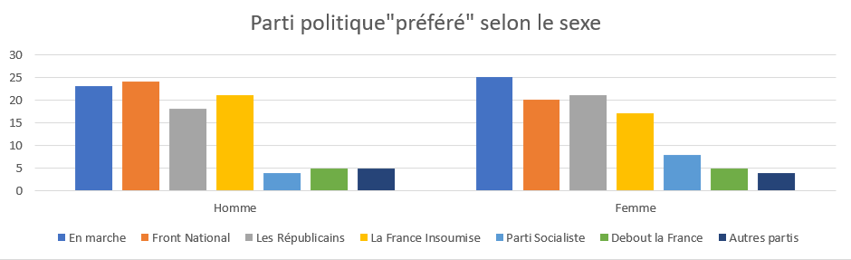
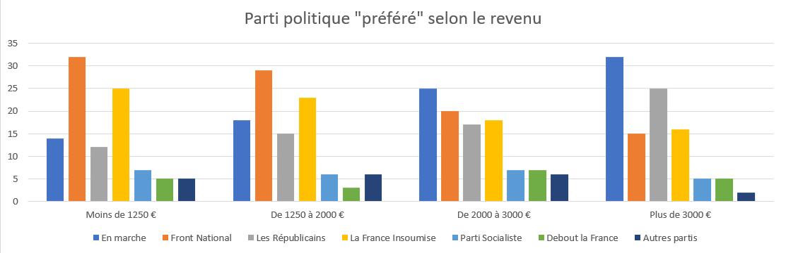
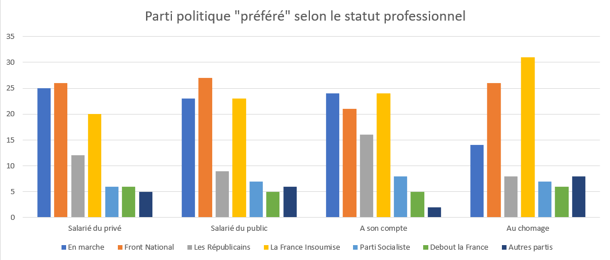
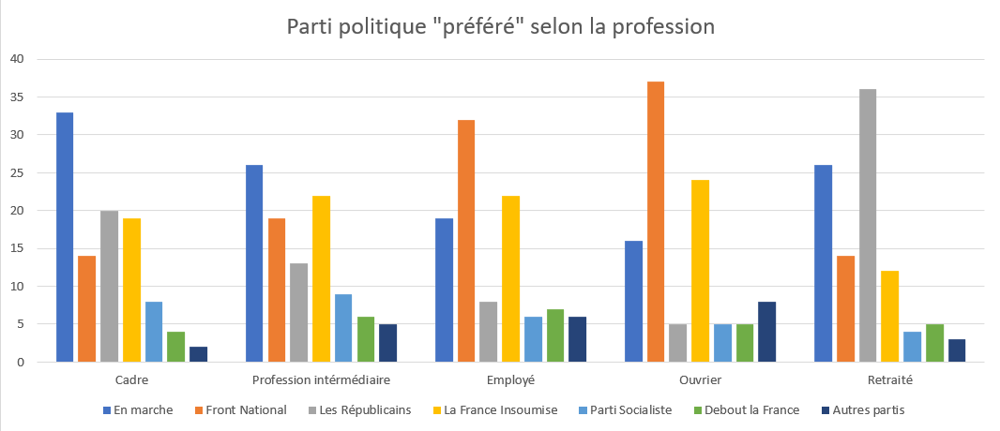

In this graph we can see that there seems to be a correlation [i.e. a link] between the age groups and the political parties voted. Indeed, the older the citizens are, the more they seem to have a tendency to vote Republican, and on the contrary, the younger they are, the more they tend to vote for France insubmissive, i.e. extreme left.
It would appear that men are more likely to vote for the National Rally than women, and on the other hand they seem to vote significantly more than men for the Socialist Party.
It would appear that men are more likely to vote for the National Rally than women, and on the other hand they seem to vote significantly more than men for the Socialist Party.
We notice here that there is once again a correlation between certain sections of the population. The proportion of voters for the National Rally is inversely proportional to the salary, and inversely for the party Les Républicains.
 We note here the distribution of voters according to their gender. It can be seen here that as the age of the voters increases, the predominance of the female sex is observed.

All these correlations indicate that certain sections of the French population feel "in tune" with certain groups and therefore political ideas. This is by no means a problem of any kind, but it is noticeable that this system almost highlights the divergences present within French society, dividing a people that is supposed to govern in a homogenous way according to the concept of democracy. In fact, today only the winners really have the power outside it turns out that the winners are not always those that the people as a whole expect.
This could lead us to ask ourselves the question of the relevance of the French electoral system. Maybe there are better ones...
We recommend the amazing Science Etonnante video that discusses alternative systems that are more efficient. This problem is in fact easy to model with the help of mathematics and maybe it is time to reform this old system